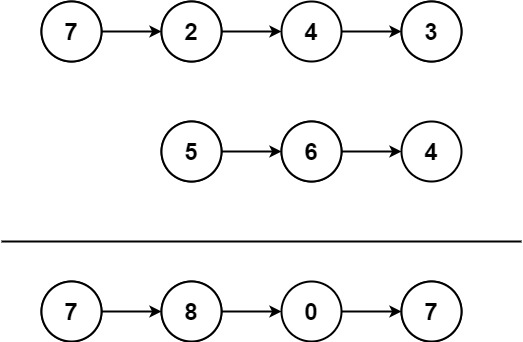

445. 两数相加 II
题目与约束
给你两个 非空 链表来代表两个非负整数。数字最高位位于链表开始位置。它们的每个节点只存储一位数字。将这两数相加会返回一个新的链表。
你可以假设除了数字 0 之外，这两个数字都不会以零开头。
示例1：

输入：l1 = [7,2,4,3], l2 = [5,6,4]
输出：[7,8,0,7]
示例2：
输入：l1 = [2,4,3], l2 = [5,6,4]
输出：[8,0,7]
示例3：
输入：l1 = [0], l2 = [0]
输出：[0]
提示：
-
链表的长度范围为
[1, 100] -
0 <= node.val <= 9 -
输入数据保证链表代表的数字无前导 0
进阶：如果输入链表不能翻转该如何解决？
核心不变量
两个数字都是「高位在前」存储，而加法必须「低位先算」；用两个栈把链表倒序后，出栈顺序恰好就是个位到最高位的加法顺序。
完整推导
思路推导
- 直觉与痛点（方向是反的）
普通的两数相加（LeetCode 2）链表是低位在前，从头遍历即可从个位开始加。但本题链表是高位在前：[7,2,4,3] 表示 7243，个位 3 在链表尾部。而加法的进位必须从个位向高位传播，直接从头遍历是反的。
- 破局思路（栈做「翻转器」）
栈的后进先出正好能把顺序倒过来。把 l1、l2 的节点值分别压入两个栈，然后不断弹出，弹出的第一个就是个位，第二个是十位……于是问题退化成最熟悉的两数相加。每轮取 a + b + carry，当前位是 sum % 10，新进位是 sum / 10。
- 关键追问（怎么边算边拼出「高位在前」的答案？）
加法是从低位向高位产生的，但我们希望结果链表仍高位在前。做法是头插法：每算出一位就 node.next = head; head = node;。这样个位先被插到最前，之后十位、百位依次插到它前面，最终 head 恰好指向最高位，链表天然是「高位在前」。以 [7,2,4,3] + [5,6,4] 为例：3+4=7、4+6=10 得 0 进 1、2+4+1=7、7 单独落下，头插拼出 [7,8,0,7]。
- 终止条件
当两个栈都空且 carry == 0 时才结束；否则最高位可能还有一个进位需要单独成节点（例如 [5]+[5]=[1,0]）。
Java 实现（双栈 + 头插）
import java.util.ArrayDeque;
import java.util.Deque;
/**
* Definition for singly-linked list.
* public class ListNode {
* int val;
* ListNode next;
* ListNode() {}
* ListNode(int val) { this.val = val; }
* ListNode(int val, ListNode next) { this.val = val; this.next = next; }
* }
*/
class Solution {
public ListNode addTwoNumbers(ListNode l1, ListNode l2) {
// 两个栈分别保存两个链表的节点值，利用后进先出实现「低位先算」
Deque<Integer> s1 = new ArrayDeque<>();
Deque<Integer> s2 = new ArrayDeque<>();
for (ListNode p = l1; p != null; p = p.next) {
s1.push(p.val);
}
for (ListNode p = l2; p != null; p = p.next) {
s2.push(p.val);
}
ListNode head = null; // 结果链表的头部（最终是最高位）
int carry = 0; // 进位
// 栈未空或仍有进位时继续计算
while (!s1.isEmpty() || !s2.isEmpty() || carry != 0) {
int a = s1.isEmpty() ? 0 : s1.pop();
int b = s2.isEmpty() ? 0 : s2.pop();
int sum = a + b + carry;
carry = sum / 10;
// 头插：新节点永远插在当前结果的最前面，天然构造「高位在前」
ListNode node = new ListNode(sum % 10);
node.next = head;
head = node;
}
return head;
}
}
C++ 实现
#include <stack>
using namespace std;
/**
* Definition for singly-linked list.
* struct ListNode {
* int val;
* ListNode *next;
* ListNode() : val(0), next(nullptr) {}
* ListNode(int x) : val(x), next(nullptr) {}
* ListNode(int x, ListNode *next) : val(x), next(next) {}
* };
*/
class Solution {
public:
ListNode* addTwoNumbers(ListNode* l1, ListNode* l2) {
stack<int> s1, s2;
for (ListNode* p = l1; p != nullptr; p = p->next) s1.push(p->val);
for (ListNode* p = l2; p != nullptr; p = p->next) s2.push(p->val);
ListNode* head = nullptr;
int carry = 0;
while (!s1.empty() || !s2.empty() || carry != 0) {
int a = 0, b = 0;
if (!s1.empty()) { a = s1.top(); s1.pop(); }
if (!s2.empty()) { b = s2.top(); s2.pop(); }
int sum = a + b + carry;
carry = sum / 10;
// 头插构造「高位在前」的答案
ListNode* node = new ListNode(sum % 10);
node->next = head;
head = node;
}
return head;
}
};
Python 实现
# Definition for singly-linked list.
# class ListNode:
# def __init__(self, val=0, next=None):
# self.val = val
# self.next = next
from typing import Optional
class Solution:
def addTwoNumbers(self, l1: Optional[ListNode], l2: Optional[ListNode]) -> Optional[ListNode]:
# 用两个列表模拟栈，实现低位先算
s1, s2 = [], []
p = l1
while p:
s1.append(p.val)
p = p.next
p = l2
while p:
s2.append(p.val)
p = p.next
head = None
carry = 0
while s1 or s2 or carry:
a = s1.pop() if s1 else 0
b = s2.pop() if s2 else 0
total = a + b + carry
carry = total // 10
# 头插：新节点接到当前结果前面
node = ListNode(total % 10)
node.next = head
head = node
return head
复杂度
- 时间：
O(m + n)，其中m、n为两链表长度。各自入栈、出栈一次，加法一轮只处理常数个节点。 - 空间：
O(m + n)，两个栈最多存储所有节点值；结果链表本身另有O(max(m,n)+1)的节点空间。
- 进位别丢：循环条件必须是
!s1.isEmpty() || !s2.isEmpty() || carry != 0，否则最高位产生的进位会丢失（如99 + 1 = 100）。 - 空栈取值：某条链表更短时，对应栈会先空，取值要用
isEmpty() ? 0 : pop()补 0，不能直接pop()空栈。 - 头插方向别写反：若用尾插 + 不逆序，得到的是「低位在前」，与答案要求相反。头插是最简洁的修复。
- 面试追问——「不能翻转链表怎么办」：本题标准解就是「不修改原链表」，只用栈暂存，符合进阶要求（既不整体翻转也不破坏输入）。若禁用额外空间，可用递归借助调用栈完成同样的逆序相加。
- 与 LeetCode 2 的对比：2 题链表低位在前，直接遍历 + 尾插即可；本题高位在前，需要「栈反转」或「递归反转」或「先反转链表（会修改输入）」三种思路之一。